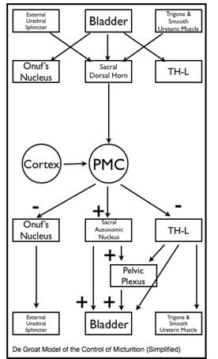
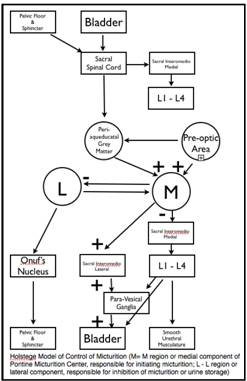
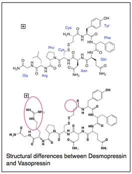
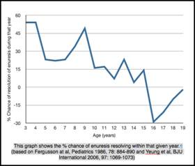

Bedwetting or nocturnal enuresis has been said to be the most common childhood condition affecting an estimated 5 -7,000,000 American children over the age of 6 years(1). There are multiple publications on prevalence rates worldwide that show remarkable consistency. Among Australian children, aged 5-12 years-old, the overall prevalence of any nocturnal enuresis was 18.9% and 15% for isolated bedwetting (2). The majority of children were affected less than once per month. Marked enuresis, defined as at least weekly, occurred in 5%, with a male preponderance. The Avon Longitudinal Study of Parents and Children (ALSPC) surveyed 11,251, of whom 8,269(73.5%) responded with15.5% of 7.5 year-olds wetting the bed, 83% doing so at most once a week (3). They used the Diagnostic and Statistical Manual of Mental Disorders, fourth edition (DSM IV ) definition of nocturnal enuresis as the involuntary passage of urine during sleep, with a severity of at least twice a week in children over 5 years of age. In Hong Kong, nocturnal enuresis, defined as at least one wet night every 3 months, affects 16% of 5 year olds, 10% of 7 year-olds and 2.6% of 10 year-olds (4). Nocturnal enuresis (not defined) has been reported in 5.6% of 5-13 year old Korean children (5).
Despite these differences in definitions the prevalence rates are remarkably similar. Whilst focussing on these differences in definitions may seem like semantic pedantry there are negative implications for comparison and meta-analysis (6). This prompted the International Continence Society in 1973 to establish a committee for the standardization of terminology of lower urinary tract function. This led in 1998 to the publication of standards and definitions of lower urinary tract symptoms and dysfunction in children (7). Advances in research and understanding of the pathophysiology of enuresis prompted the need to provide “firm and unequivocal guidelines for the terminology of LUT function and malfunction in childhood” by the International Children’s Continence Society(8). Their recommendation is that the term ‘enuresis’ be reserved for any king of intermittent urinary incontinence that occurs during sleep. The descriptor ‘nocturnal’ can be used if desired but is not necessary as the term ‘diurnal enuresis’ is now obsolete, having been replaced by the simpler and more descriptive ‘daytime incontinence’.
Enuretics still compose a very heterogeneous population of patients. Primary enuretics are defined as those who have never had a sustained period of night-time dryness of 6 months or longer in duration. Those who have are deemed to have secondary enuresis. This distinction is probably of little clinical relevance in patients who have mono-symptomatic nocturnal enuresis (9). Mono-symptomatic nocturnal enuresis describes those patients with nocturnal enuresis in the absence of ANY other lower urinary tract symptom, i.e. increased or decreased frequency of micturition, daytime urinary incontinence, urgency, hesitancy, straining, a weak urinary stream,intermittency, voiding postponement maneuvers, a feeling of incomplete micturition, post-micturition dribble and genital or lower urinary tract pain. The combination of any of these symptoms and enuresis defines the enuresis as nonmonosymptomatic. The remainder of this chapter will deal with monosymptomatic enuresis.
Genetics/Aetiology
The ALSPC project reported that odds ratio for a child developing severe nocturnal enuresis (defined as 2 or more episodes per week) were 3.63 times higher if there was a maternal history of enuresis and 1.85 times higher with a paternal history (10). Where both parents have a history of nocturnal enuresis there is a 77% chance of the offspring developing enuresis (11). There is a suggestion that children with ‘familial’ enuresis may have a more refractory variant with more symptoms/signs of mixed enuresis rather than monosymptomatic enuresis (12). Enuresis has been linked thru segregation and linkage studies to a number of chromosomes including 8q, 12q, 13q and 22q. In a large study by Loeys et al looking at 32 families with 2 to 4 generations of enuretics they found linkages to chromosomes 22q11, 13q13-14(ENUR1) and 12q with marked genetic and symptomatic/phenotypic heterogeneity (13). Several families had linkages to more than one locus, suggesting a polygenic mode of inheritance. Segregation analysis suggests that the most common mode of inheritance is autosomal dominant with high penetrance (14). It is important to understand that ENUR1 or the ‘enuresis gene’ per say has not been identified but rather that some patients with familial enuresis have been shown to have inherited two specific micro-satellite markers 13q13 and 13q14.2 and the ENUR1 gene is coded somewhere in the 5,000,000 nucleotides between these two markers. However even in large families with hereditary enuresis there is marked heterogeneity within and between families with respect to phenotypic pattern of enuresis i.e. primary/secondary, monosymptomatic/nonmonosymptomatic (15). However they did find a stronger correlation within families in terms of nocturnal polyuria and daytime voided volumes.
Twin studies provide strong support for environmental modification of a genetic predisposition in the aetiology of enuresis. Bakwin in 1971 reporting on 338 pairs of same sex twins found 68% concordance for enuresis in monozygotic twins and 36% concordance in dizygotic twins. In a much larger Finnish population based study the concordance rate for enuresis amongst monozygotic twins was 46% compared to 19% for dizygotic twins (16).
Physiology/Pathophysiology
In 2000 Butler and Holland proposed “The Three Systems Model” to facilitate our understanding of the pathogenesis of enuresis and to encourage more directed and focussed therapeutic interventions (17). They proposed that enuresis was the end result of dysfunction in one or more of the following three ‘systems’ - i) the normal diurnal variation in Vasopressin release during sleep, ii) detrusor overactivity, iii) normal sleep/arousal mechanisms. This model continues to have strong validity today though on reading the literature it is evident that individual sub-specialties place greater emphasis on the different elements. Though with our improved understanding the three systems have evolved into - i) Relative nocturnal polyuria, ii) Nocturnal bladder dysfunction, iii) Neurological Developmental Delay.
Nocturnal Polyuria
An understanding of renal physiology, that has increased enormously over the past twenty years, is central to understanding the pahophysiology of enuresis and the potential therapeutic options available.
The kidney is tasked with maintaining extracellular fluid homeostasis within a very narrow range of 280-295mOsm/kg and has to do this under circumstances that vary both from day to day and hour to hour within that day. It does this thru’ a combination of passive excretion or filtration and active secretion. The average adult kidney filters 150-180l per day, absorbing the vast majority of it, 90%, in the proximal convoluted tubule and loop of Henle. The remaining 10% passes into the distal/collecting tubules where variable amounts of salt and water are reabsorbed under the influence of Aldosterone and Vasopressin respectively. Urine volume is largely under the control of Vasopressin which increases the reabsorption of water in the collecting tubules. The volume of urine produced is also influenced by solute load. Urine concentration of solute is controlled by two different but interactive mechanisms - ADH or Vasopressin changes the volume of urine by influencing water reabsorption and the Renin/Angiotensin/Aldosterone system influences solute, primarily sodium excretion or retention (18).
Vasopressin is released in response to a rise in plasma osmolality detected by osmoreceptors in the hypothalamus. It’s mechanism of action at a renal level remained something of a mystery until Agre et in 1992,described a water channel which they would call Aquaporin (19). These transmembrane proteins in monomeric form create a transmembrane pore that resembles an hour-glass. In situ they
coalesce to form tetramers with a ~3Å thru which a single water molecule of ~2.8Å can pass at a rate of 3 X 109 water molecules per monomer per second (20). Aquaporin 1 (AQP1) is constitutively expressed and is responsible for the majority of renal water reabsorption that occurs in the proximal tubule and loop of Henle. Aquaporin 2 is the major Vasopressin regulated Aquaporin. Its expression levels on the apical membranes of the collecting duct is tightly regulated by Vasopressin, which binds to the V2 receptor on the cell surface and triggers the exocytic expression of AQP2 from vesicles within the cell to the apical surface. Removal of Vasopressin results in endocytosis (recycling) of AQP back into intra-cellular vesicles. AQP3 and AQP4, situated on basal and lateral membranes, are responsible for the release of intracellular water back into the circulation. So significant was the discovery by Agre that in 2003 he was awarded the Nobel Prize for Chemistry, which he shared with Roderick MacKinnon who discovered ion channels (http://www.nobelprize.org/nobel_prizes/chemistry/laureates/2003/public.html).
It has long been known that in the normal state we produce more urine during the day than at night. Roberts in 1860 noted that in urine, 4.5 times as much water was excreted by day as by night and that twice as much ‘solid constituents’. This is why the average individual can go 2.5 - 4 hours during the day between voids but can refrain from voiding for up to 8 hours overnight. Poulton in 1952, published on the volume of urine produced by 100 enuretic children and 18 controls and noted that there was a diurnal rhythm of urine production in both but that it was more blunted in the enuretic group (21). He found a day to night ratio of urine production to be 1.8 or greater in the control group and less than that in 69% of the symptomatic group with some as low as 1.0 suggesting no diurnal variation at all. It was he who first coined the term relative nocturnal polyuria.
Research into this phenomenon lay dormant until the seminal work by Rittig et al in Denmark who very elegantly demonstrated (in a very well controlled setting) a markedly blunted diurnal circadian rhythm of plasma Vasopressin levels in enuretic children compared with healthy controls (22). The night plasma level of Vasopressin was significantly lower in the affected children. Similarly they found that both groups produced a similar volume of urine in a 24 hour period by normal healthy children demonstrated a marked reduction in nocturnal urine output reduced by almost 66% whereas enuretic children demonstrated no such reduction. They also demonstrated a circadian rhythm to urine osmolality that was reciprocal to urine volume in healthy controls and the absence of such a rhythm in enuretics. This led to great optimism for treatment of enuretics with nocturnal polyuria with dDAVP.
Why is it that Desmopressin (dDAVP) treatment will induce a response in over 70% with a reduction in wet nights but only cures 24.5%? Why do not all enuretics with nocturnal polyuria respond to Desmopressin? At least in part this may be due to an increased solute load at night, which independently has the ability to increase urine volume. This is corroborated by the fact that at least in part tricyclic antidepressants are thought to reduce enuresis by decreasing nocturnal solute excretion (23). Again Rittig et al very elegantly demonstrated that in a subgroup of enuretics their nocturnal polyuria was associated with a significant natriuresis with an associated absence of nocturnal increase in Angiotensin II or Aldosterone. Aceto et al found a similar association between enuresis, nocturnal polyuria and nocturnal sodium excretion (24). That same group also found an association between nocturnal polyuria and absorptive hypercalciuria. Despite the selection bias of referral to a tertiary referral centre paediatric Nephrologist in Ghent, Belgium found hypercalciuria in 12% of enuretic children, which they felt probably reflected dietary intake rather than primary hypercalciuria such as that seen in the work by Caione et al from Italy (25). Valenti et al found that urinary Aquaporin 2 levels correlated well with severity of enuresis (26). In normal children the ratio of urinary excretion of AQP2 from day to night was 0.6 as compared to 1.2 in enuretics. Furthermore they found that low levels of Vasopressin and hypercalciuria were independently associated with a two-fold increase in urinary day/night AQP ratio and that low vasopressin levels when associated with hypercalciuria resulted in a three-fold increase. Not everyone believes that hypercalciuria is causative of enuresis (27). Despite their misgivings there has been some recent work to suggest that hypercalciuria acting via the Apical Calcium-sensing Receptor interfere with the function of Vasopressin resulting in increased urinary excretion of AQP and diuresis (28).
Other hormones that have been investigated include Atrial Natriuretic Peptide ( no clear association) and Prostaglandin E2, which has a clear diurnal variation in normal children with a 30% drop overnight (29,30). Looking closer at PGE2 which is a known antagonist of Vasopressin, the Danish group again found significantly elevated levels of urinary PGE2 in enuretics with nocturnal polyuria, refractory to Desmopressin therapy, when compared to healthy controls, non-polyuric enuretics and enuretics who had a dry night (31).
It is evident that a large proportion of enuretics have nocturnal polyuria. However not all of these are due to a deficiency of vasopressin. Furthermore everyone with nocturnal polyuria will have enuresis, they may have nocturia i.e wake to void.
Nocturnal Bladder Dysfunction
As early as 1878, Ruddock felt that the cause of enuresis may lay with a hypertrophic bladder with increased contractility (32). There is a well established association between enuresis and daytime bladder dysfunction with 20% or so of enuretics also having daytime symptoms i.e nonmonosymptomatic enuresis. For these patients it would seem logical that at least in part bladder dysfunction would contribute to their enuresis. In monosymptomatic enuretics however there has been a traditional understanding that their underlying bladder function was normal. Video-urodynamics carried out in enuretic patients confirmed this assumption by failing to show an increased rate of Detrusor Overactivity when compared to healthy controls, when the patients were awake. In 1989 Watanabe reported their results with combined overnight EEG and cystometry in 204 enuretics, and 3 healthy controls (33). Based on their work they were able to divide enuretic patients into three groups.
Type I (61%) - similar bladder response to filling as healthy controls, however as the bladder capacity was approached and the first detrusor contraction was seen on cystometry, the sleep stage changed but not to the extent of awakening before enuresis occurred.
Type IIa (11%) - similar findings whilst asleep as normal subjects, however neither the first detrusor contraction as bladder capacity is approached nor enuresis itself were associated with a change in EEG.
Type IIb (28%) - similar findings on EEG, but when patients entered deep sleep the cystometry demonstrated continuous uninhibited detrusor contractions (not seen when awake) and enuresis occurred without noticeable change in EEG.
These subtypes and fractional percentages were confirmed by the same group with a larger series of 826 patients in 1994 (34). They did not find any difference in functional bladder capacity between enuretics and non-enuretics after the age of 7 years old.
Yeung et al in Hong Kong used a combination of natural fill cystometry by day and simultaneous cystometry and EEG during sleep in 95 patients with enuresis refractory to treatment with Desmopressin and or alarm therapy (35). They were able to distinguish between two subgroups in this population Group A (35%) had normal daytime bladder function but demonstrated significant detrusor overactivity and a marked reduction in functional bladder capacity after falling asleep. Group B (65%) had a similar pattern when asleep but also abnormal daytime urodynamics which were previously undetected. The emphasize the importance of a detailed history and frequency volume chart to search out those enuretics who have subconsciously adapted their daytime behavior to mitigate the symptoms of their bladder dysfunction (36). The use of a diary and frequency volume chart to unearth subclinical daytime urinary symptoms or to try to quantify nocturnal polyuria must be interpreted with caution and over a sufficient length of time as there can be marked day to day intra-individual variability in functional bladder capacity and night-time urine volumes but this variability evens out over the course of a week or so (37).
Further evidence for the interplay between the three systems of Butler and Hollands model comes from the finding that use of the pad and bell alarm system, thought to address abnormalities of arousal or wakefulness in fact also alters nocturnal bladder capacity. Oredesson demonstrated an increase in nocturnal bladder capacity from a mean of 270mls pre-alarm treatment to 370mls after 6 weeks of alarm therapy, in the 10 of 18 patients who became dry (38). Even in the 8/18 that did not become dry they demonstrated an increase nocturnal bladder capacity from 235 to 294mls after 6 weeks of treatment. Both groups had acceptable daytime capacities of 345 and 315 respectively prior to initiation of treatment suggesting monosymptomatic enuresis. Norgaard et demonstrated detrusor contractions in 50 % of enuretics during sleep cystometry which could be increased to 100% by forced diuresis (39). This supports a role for interplay between factors that may cause nocturnal polyuria and nocturnal detrusor overactivity.
Neurological Developmental Delay
In 1879, Powers described experiments carried out by Goltz, who while cleaning dogs with divided spinal cords noticed that touching the perineum with a wet sponge induced micturition and attributed this to a release from ‘higher mental influences’ similar to when asleep (32).
Just as it important to have an understanding of the renal mechanisms that control urine volume so too should a urologist understand the neural control of bladder function. Over the last twenty years our understanding of the neuroanatomical and neurophysiological control of bladder function (storage and micturition) has increased enormously. This seemingly simple biological function requires very complex integration of autonomic (sympathetic and parasympathetic) and somatic nervous systems to control both smooth and striated musculature. All of this happens under the control and supervision of higher cerebral structures that reflect an acquired or learned behavior. Even now there is still much to learn with still differing models of the control of micturition. A detailed discussion of this subject is beyond the scope of this text and the reader is referred to the works of DeGroat, Holstege and Blok (40, 41, 42).
Unlike many animals humans and born whilst still very developmentally immature both physically and mentally/neurologically (43). It now appears that 5/6 of the human brain growth occurs post-natally with rapid myelination not being completed until about the age of 3-4 years old. This explains the gradual and progressive attainment of developmental milestones such as sitting at 7months, crawling at 9months, walking and 12 months and the slower rates of progress for more higher functions such as talking, understanding, socializing etc. We know that bladder control is similarly an acquired phenomenon progressing from the automatic or reflexive emptying of a neonate’s bladder to the volitional ability to both refrain from and initiate bladder emptying on demand that follows successful toilet training. Koff argues that to draw a line in the sand and say that beyond that time a previously accepted normal occurrence is now a pathological process rather than merely a reflection of delayed development is counter-intuitative (44). Based on much of the evidence already presented he proposes the existence of a dual developmental delay in their CNS. Afferent developmental delay - resulting in a failure of the CNS to recognize and respond to bladder distention and contraction (similar to Watanabe’s Types IIa and I).
Efferent developmental delay - a failure of the CNS to suppress the reflex micturition arc whilst patient is asleep, must be associated also with a failure to awaken.
Javelin, in 1989, reported on the neurological development of 156 enuretics and 170 control, 7 year-old children looking at their development and perinatal histories and administering a test of motor impairment (45). He like others found more fine and gross motor clumsiness in enuretic children. Enuretic children also has slower growth rates suggesting that isolated enuresis was associated with an obvious developmental delay. Furthermore those patients had the greater genetic influence suggesting that the developmental delay was genetic in origin. Peri-natal events did not have any significant association with monosymptomatic enuresis but small for dates, asphyxia and other neurological injury during the neonatal period was associated with a higher risk of developing nonmonosymptomatic enuresis. Others have also found evidence of generalized neuromotor delay and specific brainstem dysfunction in enuretics (46). That same group also found evidence of maturational delay in the motor cortex of the cerebrum (47). Ornitz et al have very cleverly used the Prepulse Inhibition (PPI) of a startle reflex to model the reflex inhibition of bladder contraction during filling mediated by the Pedunculopontine Tegmental Nucleus via the L-region of the Pontine micturition centre (48). In short the prepulse inhibition reflex is a blunting of the normal startle reflex in response to an auditory, visual or tactile stimulus by prior sensitization with a much weaker stimulus 120 msec before. Compared to control children enuretics have a deficient PPI response. Interestingly this deficiency remains even after the enuresis has resolved suggesting a possible inherited trait which predisposes to enuresis rather than a developmental delay per say (49).
When families are asked what they believe to be the cause of enuresis they almost universally point to the depth of sleep of the patient and an inability to wake them. However numerous sleep studies have demonstrated a normal sleep architecture and that enuretic episodes occur during all stages of sleep. It is their rousability that is impaired. Wolfish demonstrated that enuretic males were more difficult to wake that age-matched controls with 9.3% of the former and 39.7% of the latter responding to acoustic stimuli up to 120dB (50). This is consistent with the experience of parents who ‘lift’ their child to void at night usually noting that they can do so without appearing to fully awaken. Furthermore alarm therapy is often abandoned early because of a failure to wake the patient despite waking all other members of the household. A recent report using different technology (an Actigraph - which documents movement) carried out in the patients home environment rather in a hospital setting has suggested enuretics do not have a normal sleep architecture as previously stated but rather have more fragmented sleep with more nighttime awakenings and more movement during sleep(51). This is not incompatible with previous work rather more sleep disturbance may result in more sleep deprivation and therefore higher arousal thresholds.
There have been multiple conflicting reports of associations between enuresis and other parasomnias such as sleep walking, sleep talking, nightmares etc. There has long been held a belief of an association between upper airway obstruction and enuresis. In the late 1800’s an association of mouth breathing and enuresis was attributed to carbonic acid poisoning (32). More recently a report from Turkey looked at 321 children who underwent adeno-tonsillectomy, of whom 111 had enuresis pre-operatively (52). Seventy four of the enuretics were available for assessment post operatively of whom 47 no longer complained of enuresis, and 3 had a reduced frequency. They report a 63% cure rate which even with an intention to treat analysis of the original 111 would still be 46%.

Ultimately enuresis occurs because of a failure of the patient to awaken to void once the volume of urine in the bladder approaches/exceeds its capacity to contain it.
Diagnosis
The diagnosis of enuresis is fundamentally a clinical one, based almost entirely on the history obtained from the patient and parent. What is crucial in the taking of that history is firstly to exclude other forms of urinary incontinence, whether that be mixed day and night-time incontinence suggestive of an underlying bladder dysfunction, continuous incontinence suggestive of structural or anatomical abnormalities or secondary enuresis more suggestive of other medical or psychological causes (53).
The history taken should be extensive and exhaustive covering all of the areas outlined above. The nature of the urinary incontinence (day or night), the frequency of occurrence (relates to prognosis), the severity and timing (may influence treatment selection), the duration of symptoms (primary or secondary), the presence of other daytime symptoms suggestive of bladder dysfunction (frequency, urgency, postponement maneuvers), history of urinary tract infections, dietary intake (timing, nature of food/fluids etc), bowel habit including faecal incontinence, behavioral problems (ADHD, learning difficulties, sleep disturbances/parasomnias), snoring or sleep apnoea. It is important to understand the past medical history including pre-natal and perinatal events, and developmental history. Family history of enuresis as it points to prognosis. Social history as multiple life events (e.g. new sibling, parental separation etc.) may point to psychological comorbidity.
As these patients are often withdrawn and introspective (at least at the initial consultation) physical examination can safely be kept to a minimum of anthropometric measurement (to partially exclude developmental delay), blood pressure and urinalysis (to exclude renal pathology), abdominal palpation (for evidence of fecal loading if the history suggests it). In the absence of features suggestive on history genital/perineal examination is rarely indicated, nor is a detailed neurological examination (beyond watching the patient walk into the examination room) (54).
Investigations
Few if any investigations are necessary in monosymptomatic enuresis beyond urinalysis. Though not strictly speaking an investigation a detailed frequency/voiding or elimination diary is the most useful investigative tool. It may help to direct therapy by documenting nocturnal polyuria or by unmasking daytime symptomatology.
Management
One study found that 23 to 36 percent of parents had used punishment as their primary means of dealing with bed-wetting (55).
“I knew that bedwetting was a) wicked and b) outside my control....It was therefore possible to sin without knowing you committed it, without wanting to commit it, and without being able to avoid it.....The double beating was a turning point for it brought home to me for the first time the harshness of the environment into which I had been flung....I had a conviction of sin and folly and weakness such as I don’t remember to have had before.”
The collected essays, journalism and letters of George Orwell. Vol IV. In front of your nose, 1945-1950. New York: Penguin Books, 1970.(56)
Modern day medical management of nocturnal enuresis has come a long way from punishment or shaving the testicle of hare into fragrant wine to drink. In 1545 the comb of a cockerel or the stones of a hedgehog were used in a similar manner (32).
The essential prerequisites for successful treatment of nocturnal enuresis are a motivated child, understanding and co-operative parents, with realistic expectations, and an enthusiastic, interested and informed therapist (57). For primary nocturnal enuresis the therapist may be the family doctor, clinical nurse practitioner, continence physiotherapist, paediatrician or paediatric urologist.
Prior to commencing any medical intervention simple behavioral modifications based on the patients history and elimination diary are appropriate. This is often referred to as urotherapy. For the most part these are common sense suggestions based on what has been written above. Patients should have a regular voiding habit during the day and obviously last thing at night before retiring. They should consume an appropriate volume, of the right kinds of fluids e.g water rather than soft drinks, at the right time - i.e drink the majority early in the day and afternoon and limit fluids at bedtime to only that required to quench thirst. They should eat sensibly, sufficient to avoid or treat constipation and should refrain where possible from heavy meals laden with calcium and salt near bedtime. This often proves difficult as it many western families the main meal of the day is consumed in the evenings close to the bedtime of enuretic 7-10 year olds.
Though there is no direct evidence to support these simple clinical measures in monosymptomatic enuresis. They place little additional burden and there is some circumstantial evidence that constipation for example is almost five times more common in enuretics than non-enuretics (58).
With these simple and intuitive measures in place adjunctive therapy should be considered.
For a comprehensive review of the management of nocturnal enuresis in children and adolescents the reader is directed to the National Institute for Health and Clinical Excellence (NICE) guidelines for management of nocturnal enuresis, published in October 2010 by the NHS in the UK (http://www.nice.org.uk/nicemedia/live/13246/51367/51367.pdf). We will touch herein, upon the various treatment options available which logically attempt to address the underlying pathological abnormalities in the three systems described above. Some authors have suggested sub-dividing nocturnal enuresis into Desmopressin-dependent and Detrusor-dependent sub-categories.
Desmopressin
Desmopressin therapy has its origins in the use of pituitary, and later posterior pituitary, snuff to reduce urine volume. The first report of pituitrin snuff to treat diabetes insipidus was made in 1924 and in 1925 it was used to treat nocturnal enuresis in children for the first time. It was not until 1955 that a blinded cross-over trial of Di-sipidin (posterior pituitary snuff) versus placebo was carried out by Marson in Leeds (59). He found a marked reduction in the incidence of enuresis during snuff treatment in 4 selected adolescents.
Nowadays Desmopressin, a synthetic analogue of Vasopressin, available since 1980, is used. Desmopressin, or dDAVP, is created by de-aminating the cysteine residue (which prolongs its activity) at one end of Vasopressin and replacing L-arginine with D-arginine (which reduces the vasopressor activity). In so doing this renders dDAVP a potent antidiuretic with reduced vasopressor activity and a prolonged half-life of 1.5-3.5 hours compared to about 12 mins for Vasopressin (60). The time to maximal biological activity following ingestion is approximately 60 mins (61). Its rapid onset of action means that it is often recommended where a quick response (such as going on overnight camps, sleepovers etc) is needed.
There is clear evidence that when compared to placebo Desmopressin reduces bed-wetting by one to two nights (62). People receiving Desmopressin are almost twice as likely as those on placebo of being cured (defined as achieving 14 consecutive dry nights. The short term success rate for Desmopressin therapy is 69% (range 32-100%) with long-term success rates of 45.7% (range 7-78%) (63). With improved patient selection though the use of minor invasive diagnostic tests such as micturating cystourethrography, Cystometrography and video-cystometrography the short term success rates improve to 84%(47-97.2%) and long-term to 78.5%. This is probably the result if selecting out patients with subtle forms on nonmonosymptomatic enuresis. A tapered withdrawal of Desmopressin is associated with a more prolonged benefit with 57% having fewer than 2 wets nights per month in those who stopped taking it abruptly compared with 80% in those who had a gradual reduction (64).
Desmopressin comes in a variety of preparations from intravenous, nasal drops, nasal spray, oral tablet and most recently a new fast melting oral preparation (61). Approximately 1% of orally administered Desmopressin appears in the blood and is biologically available, compared with 11% of intra-nasal dDAVP (64). The improved bioavailability of the intra-nasal spray is mitigated by 1) the increased risk of side -effects, of varying severity from epistaxis to hyponatraemia (63); 2) variability in absorption and efficacy during intercurrent nasal illnesses such as URTI, allergy and nasal congestion etc. To offset the bioavailability of oral administration, tablets tend to have a ten-fold dose of dDAVP. However there is evidence of interaction with food in the GI tract affecting bioavailability of dDAVP and possibly explaining some inconsistency of effect in Desmopressin responders. The newly released Desmopressin Melt, presents the dDAVP as an oral lyophilisate that dissolves immediately in the mouth, without the need for water, making the presentation more acceptable and palatable to children (61). The melt formulation as well as more reliable absorption has improved and predictable bioefficacy - a dose of 60mcgs of melt has the equivalent biological effect as 100mcgs of tablet. That said no significant difference in clinical effect between tablets and sublingual melts has been demonstrated
(63).
There would appear to be a higher likelihood of success with a longer duration of treatment, e.g. 3 months. Prolonged therapy with Desmopressin has been shown to be both efficacious and safe (66).
Therefore current recommendations for the use of Desmopressin are that it can be offered to children over 7 years of age and considered for those between 5 and 7 years. It is appropriate where a rapid-onset or short term treatment is needed or in those in whom alarm therapy is either not appropriate (wets < 2nights/week) or who have failed alarm therapy. It has no role in the management of isolated daytime wetting but nonmonosymptomatic enuresis is not a contraindication to its use (in conjunction with management of daytime symptoms). One should start at a low dose of either 120mcgs for melt or 200mcgs for tablet and consider doubling the dose after 2 weeks in non responders. For those with no response after 4 weeks (at higher dose) consider stopping, reassessing and alternative or combination therapy (67). Desmopressin should be taken 1 hour before bed-time in combination with fluid restriction for 2 hours before bedtime and bladder emptying immediately before retiring (68).
Alarm Therapy
The forerunner of the modern day pad and bell was described by Nye in 1881 who placed a dry sponge over the urethral meatus and a wet sponge between the shoulder blades connecting the two by battery. While the urethral sponge was dry the circuit would not conduct but when dampened with urine will ‘arouse’ the patient ‘in the very act. A repetition of a like experience for a sufficient number of times, I am inclined to think, ought to cure the patient.’ (32) The thinking at that time was that enuresis arose from the bladders ‘undue excitability and readiness to contract’ (69). It was to quell this excitability that Belladonna was prescribed. However the conducive nature of profound sleep was recognized and hence ‘electricity, being a stimulant (to treat depth of sleep) as well as a sedative (to treat bladder excitability) appears suitable for both’. It must be remembered that though the term was coined in the 17th Century by William Gilbert electricity really took off in the late 18th and early 19th centuries so there was a lot of applications in medicine including the publication by Erb in 1882 of a Handbook of Electro-Therapeutics which recommended application of electricity both externally and internally to the urethra!
Alarm therapy has long been the established first line treatment for enuresis. Modern day alarms continue to make use of the electrical conductivity of urine to complete an electrical circuit and trigger an arousal stimulus - usually audible but recently vibratory. Traditional alarm systems use a large pad placed in the bed connected to the alarm box. Recent alterations have developed alarms that utilize a small conductive strip placed in the patients underwear and connected to a body worn alarm (e.g. WetAlert, Dri Sleeper Excel, Enurad 400 etc). Some use a combination of sound and vibration and can be wireless (e.g. Malem Ultimate, PottyMD Wet Stop3 etc). There has always been a large selection of alarms to choose from with little if any distinguishing features (70).
A recent Cochrane review of the use of alarm therapy in the treatment of enuresis reviewed 56 studies, involving 3257 children finding that compared to no treatment, about two thirds of children became dry while using an alarm (71). For those in whom it works nearly half remain dry after treatment finishes. They found little evidence to favor one particular alarm over another but there a suggestion that alarms that woke the patient directly rather than a parent were more successful. Alarm therapy seems to be more effective with prolonged use.
There have been a number of attempts to supplement the success of alarm therapy varying from additional behavioral modifications such as retention control training, over-learning, dry bed training, reward systems (star charts etc.), or punishment systems. In general this had little if any additional value. The only one with some merit is over-learning. This requires a patient who having achieved 14 consecutive dry nights to challenge their bladder by consuming extra fluids at night and persisting with the alarm therapy until 14 consecutive dry nights are achieved. Certainly the addition of over-learning reduced the relapse rate, as did dry bed training. Over-learning was associated with a reduced relapse rate from 49% to 25% and dry bed training from 63% to 27%. Dry bed training, developed in the ‘70s for patients with learning disabilities includes an intensive program of waking at night and a punitive regimen of ‘cleanliness training’ if wetting occurs - this rather onerous and somewhat negative approach has no more appeal to this author than do alarms that administer an electric shock.
Perhaps the greatest problem with alarm therapy is adherence with the treatment or compliance. The group from Ghent have demonstrated remarkable compliance, approx. 75%, with behavioral strategies such as drinking and voiding schedules (72). Factors that they identified as having a positive impact on compliance with medical management included self-perception of appearance, feeling less stressed by their condition and a mature attitude towards problem resolution. Higher drop out rates (10 - 30% have been reported) from trials have been shown to be associated with parental intolerance, behavioral problems with the child of a negative self image. Compliance issues are not related to side-effects as there are very few if any. The days of ‘buzzer ulcers’ are long gone with modern technology.
Watanabe having exposed EEG evidence of a change in sleep from deep to light, based on delta-wave changes developed an alarm system based on EEG which would alert a nurse when sleep pattern changed acutely and then the nurse would wake the patient to void. The perceived advantage being that the patient was woken before enuresis occurred. They demonstrated benefit in 55% and cure in 17% after 5-6 nights of in-hospital therapy (34).
What is still not clear is why alarm therapy works. The simplistic approach is to believe that it works as a form of aversive conditioning, i.e. the patient wakes as bladder reached fullness to avoid the painful audible stimulus. Others consider it to be a form of operant conditioning in that the sensation associated with bladder filling become associated with waking from sleep to void. However the majority of children who become dry whilst using alarm therapy do so whilst sleeping through the night without wetting (65%) rather than waking to void (35%). To further illustrate our ongoing ignorance of the complexity involved in enuresis, despite the levels of understanding illustrated by DeGroat, Holstege, Yeung et al. there was a recent publication by Schulz-Juergensen et al. They found that dDAVP given to enuretic children increased their Prepulse Startle Inhibition reflex up to the level of normal controls whereas placebo did not (73). This evidence of a centrally acting role for Desmopressin as well as its renal role demonstrates the complex interaction between the central nervous system and peripheral organs in the pathogenesis of enuresis.
Current treatment recommendations for the alarm are that it should be offered as a first line therapy for motivated enuretics that have not responded to behavioral modification or urotherapy, that wet more than twice a week and have supportive parents or carers. If there is no sign of improvement after 4 weeks then treatment should be stopped. Successful treatment should be continued until a minimum of 14 consecutive dry nights have been achieved (67). Alarm therapy requires a minimum of 6-8 weeks of continuous use to reach its effect. Patients and families need to be reviewed fortnightly to maintain motivation and compliance. It is advisable, for some children, that a parent sleep in the child’s room at the start of treatment to help him/her to wake up immediately when the alarm goes off (54). A video of the Malem alarm in use can be found at http://www.youtube.com/watch?v=cst7jPCzAs4
Anti-cholinergic Medication
Anticholinergic medication (Oxybutynin or Tolterodine for example) have a proven benefit in patients with daytime urinary incontinence secondary to detrusor overactivity. It has a similar potential benefit in the treatment of children with nonmonosymptomatic enuresis and hence may be considered early in the management of those patients who fail to respond to urotherapy. However as shown above 28% of enuretics will have urodynamically demonstrable detrusor overactivity only at night and hence treatment with an anticholinergic medication at night has good merit. Rather than perform sleep urodynamics in all enuretics treatment with an anticholinergic is suggested fro those who have failed or only partially responded to Desmopressin therapy (57). It is recommended that anticholinergics be used in combination with rather than instead of Desmopressin (67). Prior to initiating anticholinergic therapy constipation must be excluded/managed and bladder emptying must be assessed to exclude existing significant post-void residuals as these may well be worsened (54). A Cochrane review of 2009 failed to find evidence of benefit of oxybutynin therapy over administration of placebo (74). However Watanabe’s group in Japan have reported successful outcomes in two thirds of enuretics selected on the basis of demonstrable nocturnal detrusor overactivity.
A significant limiting factor with oxybutynin therapy is the high incidence of side-effects. Theoretically with a half-life of 8-13 hours immediate relief oxybutynin should not cause significant side-effects when administered at night however Lovering et al in 1988 found no benefit in 30 children and found minor side effects (stomach discomfort, fatigue, dizziness, headache, dry mouth) in 17% (75). A more detailed discussion of the side effects and pharmacology of oxybutynin is provided in the chapter on dysfunctional voiding.
Given the side-effect profile of oxybutynin, more M3 muscarinic receptor specific agents such as tolterodine have been trialed and found to have a role. Tolterodine initially at a dose of 2mg at night and increased to 4mg after 1-2 months in the absence of side-effect or benefit may help. Slow release Tolterodine at a dose of 4mg has been shown to be significantly better than placebo when used in combination with Desmopressin, resulting in a 66% reduction in propensity for wet nights (76).
Tricyclic anti-depressants
The use of Imipramine (Tofranil) to treat enuresis was first described in 1960 (77). Following the observation of difficulty initiating micturition in adults treated for depressive illnesses, psychiatrists in Melbourne, Australia trialled a lower dose in enuretic children. Since then many differing tricyclics have been used but Imipramine has ben the most common. They act by inhibiting neuronal re-uptake of noradrenaline and serotonin, thereby prolonging their effect. They have also been shown to have anti-cholinergic properties, though it is unlikely they exert their effect in this way as they are often successful in patients who have previously failed anticholinergic treatment. Their exact mechanism of action is unknown with multiple possibilities possibly a peripherally mediated anti-cholinergic effect and smooth muscle relaxant effects, due to a centrally-mediated sympathomimetic effect, a central effect or arousal mechanisms or stimulation of vasopressin release (57). Whatever the mechanism it has been shown in a systematic review to reduce bedwetting by approx. one night per week and to be curative in 20% of children (78). However relapse is common upon stopping the medication and more worryingly side effects can be severe.
Tricyclics as well as having anti-cholinergic side-effects are both cardio- and hepato-toxic and potentially lethal. Prior to starting treatment an ECG must be obtained to exclude an abnormal Q-T interval (57). That said the vast majority of side effects reported from trials of Imipramine were minor with no fatalities. it is extremely important that the drug be secured safely within the home and the recommended dose not be exceeded to avoid overdosing. Regular drug holidays are also recommended (54). Benefit if seen will be seen within the first 1-2 months. Treatment should be gradually withdrawn (67).
A selective noradrenaline re-uptake inhibitor, Reboxetine, has been used and showed a response in 11 of 61 children with enuresis (79). A further 21 (total 32 or 52%) responded to the combination of Reboxetine and Desmopressin.
Combination Therapy
In an effort to improve efficacy combination therapy is being increasingly trialed. Combinations include Desmopressin with Anticholinergic (Tolterodine), Desmopressin with Tricyclic (Reboxetine), Desmopressin with Alarm Therapy. All of these combinations have been shown to be superior to individual therapy alone. The order of the additional therapy i.e. Desmopressin or alarm first with alarm or Desmopressin added has no impact on the benefit of combined therapy (80).
Other Drug Therapies
Given the potential involvement of Prostaglandin 2, a known Vasopressin antagonist, discussed above in the pathogenesis of enuresis, prostaglandin synthesis inhibitors (Indomethacin and Diclofenac) have been trialed in enuretic children with limited success reported (81, 82). However a Cochrane review found no benefit (74).
The association of enuresis with high solute urine load has inspired trials of diuretic therapy for refractory enuresis again with some isolated low level success (83, 84)but none that stood up to the rigors of a Cochrane review.
Alternative Therapies
Traditional Chinese Medicine has claimed success rates of 76-98% for reduction in enuretic episodes following acupuncture treatment (85). In this systematic review Bower et al identified 84 studies that investigated the use of acupuncture in children for the treatment of enuresis. They found reported cure rates ranging from 30 -93%. However the majority of the trials were of poor quality with minimal randomization and little attempt to minimize bias. When they considered only the 4 ‘best’ studies they found acupuncture to be superior to Chinese herbal medicine but not to standard anti-enuretic western medicine). They report on the application of functional MRI, which demonstrated a central effect in the hypothalamus and peri-aqueductual grey matter in response to peripheral stimulation and thus hypothesize on the potential mechanism of action.
A Cochrane Review in 2009 looking at complimentary therapies found weak evidence at best to support the use of Hypnotherapy, Psychotherapy, Chiropractic, Homeopathy but no evidence that compared these modalities to conventional treatment (86). Psychotherapy, Acupuncture, Hypnotherapy and Chiropractic all appeared to have some slight benefit whilst the patients were receiving treatment but little evidence of persistent benefit once treatment stopped.
Some researchers have reported an association between sleep disturbances secondary to obstructive sleep apnoea and snoring in both adults and children (87). The theoretical pathophysiology being an increase in natriuretic peptide. Whilst that paper did reference studies that reported resolution of enuresis following adeno-tonsillectomy. Many of those were non-randomised and retrospective studies (52). However a recently reported prospective controlled trial from New York found no significantly improved rates of resolution of enuresis in children undergoing tonsillectomy when compared to enuretic children undergoing other operations (88).
Prognosis
According to Fergusson et al the strongest predictor of outcome was a a family history enuresis (89). Having two of more first degree relatives with enuresis was associated with a 1.5 year delay in becoming dry by night. Similarly and probably for reasons described above children with developmental delay are slower to achieve nocturnal bladder control.
Outcome and Complications
For rather a long time no treatment was felt to be necessary or indicated as enuresis was regarded as a normal phenomenon, reflecting different rates of attainment of continence (90). The oft quoted figure of 15% spontaneous resolution or 1 chance in 6 of attaining nighttime dryness per annum is attributed to Forsythe and Redmond (91). Their paper in 1974 reported their own series of 1129 who had attended an Enuresis Clinic in Belfast from 1952 -1959 and who had not been treated with an electric alarm. From these patients and a review of the literature at the time they published ‘spontaneous cure’ rates of 14% between 5-9 years, 16% between 10 and 14 years and 16% for 15-19 years. 3% of patients were still wetting after 20 years of age. It must be noted that this study was not confined to monosymptomatic nocturnal enuretics. Primary enuresis alone occurred in 629 or 56% of their population. Their conclusions are further weakened by the fact that these 1129 patients ‘were not cured by drugs or operation’; all patients had received treatment with at least 2 drugs of varying mechanisms of action from atropine like activity (Belladonna, phenobarbitone, atropine etc), anti-cholinergic activity (Propantheline), Ephedrine and amphetamine-like activity, sedatives (Hydroxyzine hydrochloride), diuretics (Cyclopenthiazide) as well as psychotherapy, behavioral modification (lifting etc.). Nevertheless their rates of resolution were commensurate with others published to that time.
A large epidemiological questionnaire-based study by CK Yeung’s group in Hong Kong defined prevalence rates for nocturnal enuresis among children and adolescents (90). A response rate of 78.6% to the 21,000 questionnaires revealed an overall prevalence of primary nocturnal enuresis of 3.1% of whom 20.7% also had daytime urinary incontinence. They very elegantly demonstrate a marked reduction in the overall incidence of primary nocturnal enuresis with increasing age. An overall prevalence rate of 16.1% at 5 years of age had reduced to 10.1% by age 7, 3.14% by age 9 and 2.2% by 19 years of age. There was a marked male preponderance until age 7 and thereafter only a slight bias towards more boys being afflicted. What is not apparent from this study is whether this resolution is ‘spontaneous’ or the result of medical/behavioral intervention. The most interesting data to emerge from that study revealed that spontaneous resolution probably really only applies to those who have mild enuretic symptoms i.e. wet <3 night a week.
|
5 years old |
19 years old |
Overall Prevalence |
16.1% |
2.2% |
% who wet <3 nights/week |
55.7% |
10.3% |
% who wet 3-6 nights/week |
30% |
41.4% |
% who wet 7 nights/week |
14.3% |
48.3% |
Adapted from Yeung et al, BJU International 2006, 97: 1069-1073
They also demonstrated that adolescent enuretics have a greater prevalence of nonmonosymptomatic nocturnal enuresis that those less than 10 years of age.
Long-term Outcomes/Adolescent Management
There have been a number of publications looking at the psychological and academic impact of enuresis and the ability of treatment to ameliorate that. Previous reports have suggested that enuretics did not achieve their full academic potential but that is reversed following resolution of enuresis. A recent large population based study in the UK did not find this however (92). They found an association between bedwetting and increased reporting of parental concerns re sadness/depression, attention/activity disorders, conduct disorders, oppositional behavior and general anxiety. Unlike previous reports they did not find any evidence of increased child-reported behavioral issues such as bullying/victimizing, academic achievement, self-worth or friendships.
“Management of nocturnal enuresis is a rewarding art which requires an enthusiastic doctor who is willing to use a variety of different stratagems with confidence according to the particular needs of the child and family”
Roy Meadow, Arch Dis Child, 1974, 49:257-258
References
 |
 |
 |
 |
 |
 |
 |
 |